１５日目(9/18)～帰途～
TerritorialParktoWhitehorse(TakhiniHot Springs)
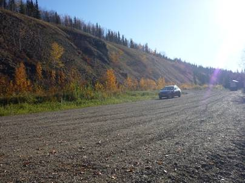
今日からは遥か南のバンクーバーを目指し、帰路に着く。3000kmは離れているだろう。
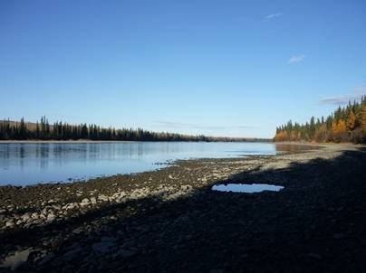
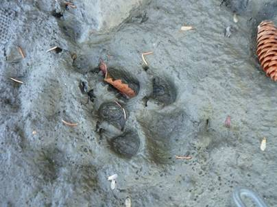
クロンダイクハイウェイの途中で小休止。すぐそばを流れている川に散歩に行くと、少しぬかるんだ川原に何かの動物の足跡を見つけた。犬に見えなくもないが、かなり大きな足跡だったので、ひょっとするとクマかもしれない。実際、このあと運転中にクマを見かけた。前方の車道を素早く横切っただけだったので写真に収めることはできなかった。
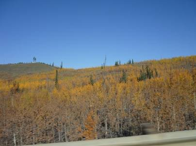
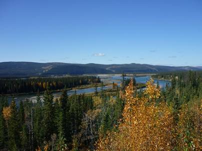
少し南下すると、まだほのかに紅葉が残っている場所も見ることができる。再びユーコン川沿いにホワイトホースへ戻る。
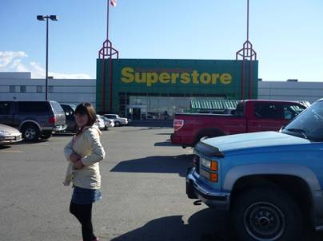
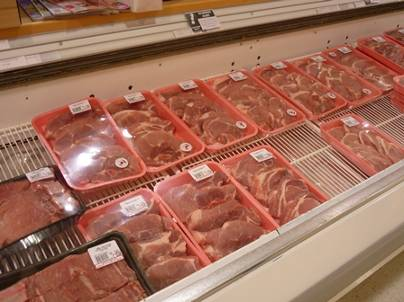
出発地点から600km強、荒野を走り続け、再び州都ホワイトホースへと戻ってきた。この辺りではアラスカナンバーの車も多く見かける。前回と同じスーパーに行き、豚のステーキ肉を買った。実は前回も同じ肉を買い、Takhini温泉で生姜焼きにして食べた。その時の味が忘れられず、もう一度作ろうというわけだ。
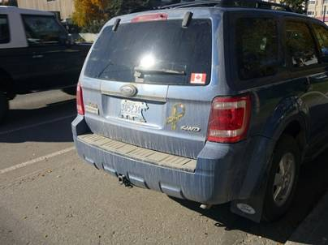
アラスカナンバー以外にも、ノースウエスト準州の白熊のシルエットをしたナンバーも発見。デンプスターハイウェイの終点、イヌーヴィクはユーコンではなく、ノースウエスト準州になる。あるいはグレートスレーブ湖の方から来たのかもしれない。
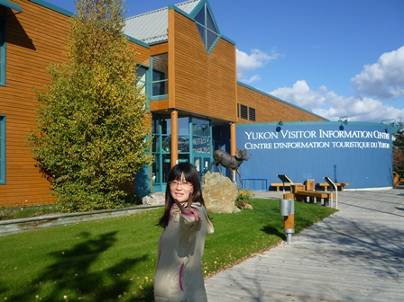
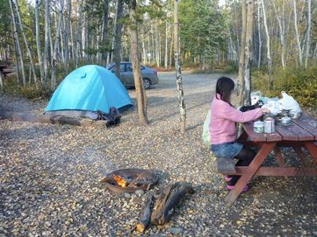
その後、北米で有名ななんでも売ってるスーパー、ウォルマートでサンダルを買った。日本から持ってきた靴ははき続けていたせいか、異様な臭いを発していたからだ。その後、観光案内所に寄り、再びTakhiniHot
Springsへ。臭かった靴は焚火の燃料として燃やしてやった。
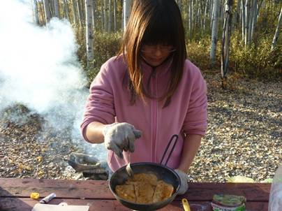
豚肉をジュージュー焼く。ステーキ肉で作る生姜焼きは絶品。ちなみに、カナダでは牛肉と豚肉の価格はあまり変わらない、というより牛肉の方が安いくらいだった。
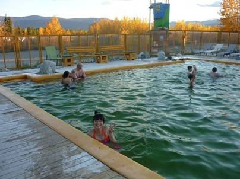
食後、今日も温泉へ。この明るさでも夜の8時なのだから驚き！こんなに明るくてはオーロラなど見えるはずもない。日本の温泉とは違い、水着を着ての男女混浴。プールのような広さだ。カップルの姿も多く、あるカップルは周囲の目など全く気にすることなく終始熱いキスを交わしていた。